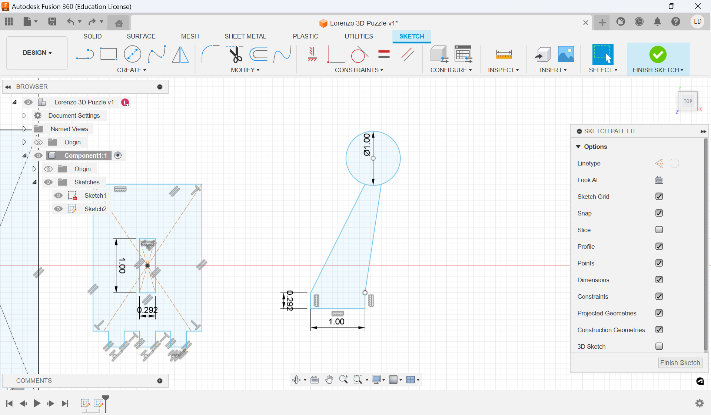

Introduction
In this mini project, we created designs to then have cut using both a laser cutter and a cricut cutting vinyl. I created a sticker design for the vinyl and a 3D puzzle to be cut out of wood using the laser cutter. Here's how it went-
3D Puzzle
For the 3D puzzle, I wanted to design something with reference to both my name and my favorite video game series, The Legend of Zelda, which I often take inspiration from for my projects. I had the idea to make the "L" from my name a base plate for some Zelda-related design. Inititially I wanted to make a sword stick through the vertical half of the "L", however, after a few different versions on Fusion 360, I didn't really like how it was looking. Instead, I decided to make a floating fairy from the game series, which would have a stand attached to the bottom of the "L".
I began by making the vertical part of the "L". The first move was to make a simple rectangle, specifically 5 cm x 2 cm. I wanted the two halves to be attached with teeth, so I first measured the thickness of the plywood I was using to match up the teeth size with the thickness and have a clean connection. This measurement came out to be 0.115 in, or 0.292 cm. I created three grooves at the bottom of the rectangle that were each a 0.292 cm x 0.292 cm square. I separated them evenly by centering the middle square to the rectangle, and then placing the other two squares on the middle points of the two halves created by that initial square. This ensured that there was a consisted 0.281 cm between each groove.
I then created the bottom base of the "L", starting in a similar manner by making a 3 cm x 2 cm rectangle. I then subtracted four 0.281 cm x 0.292 cm rectangles from the bottom of this base to match the teeth of the previous piece. I then added a rectangle to the center of the base, 1 cm x 0.292 cm, to act as a slot for the fairy.
Then I moved on to the fairy. For this part, I started uff by making a rectangle at the bottom, 0.292 cm x 1 cm, to serve as the section fitting into the slot in the base of the "L". I then added two lines going up diagonally, ending them near each other but with a small space between. Finally, I made a 3-point circle at the top of this shape, creating the main body of the fairy and finishing the stand for it. All that was left for this figure were the wings.
The fairies in The Legend of Zelda have essentially two sets of wings: a bigger, eliptical pair at the top and a smaller, more triangular set towards the bottom. I used the fit-point-spline tool on fusion to create both. I first created the general shape of one of the wings before adjusting the curves until I was satisfied, finally ending by mirroring the shape across the body using a construction line. With that, the fairy figure was done.
These next two figures show the final sketches of the puzzle pieces on Fusion 360 as well as my own sketches of these shapes on my Ipad. The image to the left shows the final version of the pieces (which I'll get to how they changed in a moment). My personal sketches include the original measurements and the edits I made to the pieces.

The first step in getting my pieces laser cut was exporting them to Affinity Designer 2 as a .dfx file. Once this was done, I cleaned up and deleted any extra lines that I didn't want to be cut. After finishing that, I sent the design over to my teacher, who put it into the laser cutter to be cut. The first iteration of my puzzle was cut cleanly, however the "L" teeth and the fairy-stand-slot were too loose and didn't attach together correctly. This was because I had forgotten to account for the kerf of the laser cutter.

I went back into my Fusion sketch and edited the sizing of the slot and teeth to fit together more snug. After having the new version cut, I went and put the pieces together. The fairy stand fit perfectly into its slot. The teeth fit better together, however they still wouldn't completely attach together on their own. I did manage to hold up the puzzle using a rubber band, and later I plan to hold the pieces together with wood glue or a strong tape.


My final design adjusted for the teeth not fitting perfectly together, making the middle tooth of the base larger than the other two in order to have a tighter fit. I had this version cut out as well, however an issue came out of this version. When my design was placed into the laser cutter software, it was put in larger than it should have been. My design had been made accoruing to the exact thickness of the wood, so if it's cut too big or too small, the design won't fit perfectly together. While the teeth didn't connect better than before, there was still some looseness to it because of this issue. The problem can most clearly be seen with the teeth on the back and bottom of the design, as they portrude outward instead of lying flush with the rest of the piece.


I decided to stick with the second design, as the teeth were flush with each other and the lack of a tight connection could be fixed by an adhesive. While in my room I realized that not only could "L" base plate be used to simply have the puzzle stand upright, but a strong tape could also be used on the vertical piece to have the puzzle sit on the side of some wall. I used a piece of double-sided gorilla tape, attached it to the back of my puzzle, making sure that it stuck to both sets of teeth, and attached the whole piece to the side of my PC. This small addition brings this other wise flat surface in my room to life by adding a 3D shape popping out of it.

Vinyl Sticker
For my vinyl stycker, I initially wanted to make a wooden shield found in the Legend of Zelda series, however I figured the limitation of colors would mean that the detal necessary to depict the shield would be lost. Instead, I chose to keep with the same design as my puzzle, creating another fairy design, this time following with the color scheme of a specific fairy from the Legend of Zelda series: Navi, a blue fairy that follows you as a companion in one of the games. By sticking with the same general idea I was able to save time on making several iterations of the design, simplifying the work I had to do.
The first step was to open Affinity Designer 2, as this application allowed for me to work with vectors. I created a document and started working, making the first base shape a circle with a light, pale blue color: this color would be used to show the faint glow that the fairies of this world have.

The next step was to create the wings. I approached these wings in a similar manner as the wings I made for the puzzle. Here, I used curved vectors to mold one of the wings in each set. Then I would duplicate the wing, flip it on its y-axis, and move it over to the other side of the circle. Finally, I used the same color as the circle to fill in the wings.
This next step adds a lot of simple parts to the design. First, I added a background to the entire fairy to add more color contrast and created a solid background for the sticker once I have to combine all the parts together. Next, I added a light blue circle on top of the pale blue backdrop, creating the actual body of the fairy, as well as adding a small elipse in the light blue circle in the same pale blue color as a small shine detail. Finally, I added a small trail of sparkles behind the fairy and pointed the wings slightly for a sharper look.

Small changes yet again. First I changed the background color of the sticker from gray to green. This was done as a reference to the iconic green tunic of Link, the main player-character of the Legend of Zelda game series. I also added a small Triforce at the top, another item seen within the games.
After sending a png of my design to my teacher and putting the design into a cricut software to get ready to cut, I chose the vinyl I wanted to use and began the process of having each piece cut out in its own color. After everything was cut out, I removed the excess vinyl, leaving me just with the pieces of my design.
The last step was to assemble everything. I decided to put everything together by hand, which turned out okay, however I could have done a better, cleaner job by layering tape together, placing the first layer sticker on the tape, and applying the stickers on backwards. By doing it by hand, I ended up slightly stretching the vinyl and overlapping pieces in some ares. Overall, I think the sticker came out nice, and it offered me better insight on how to better organize myself when putting together vinyl stickers.